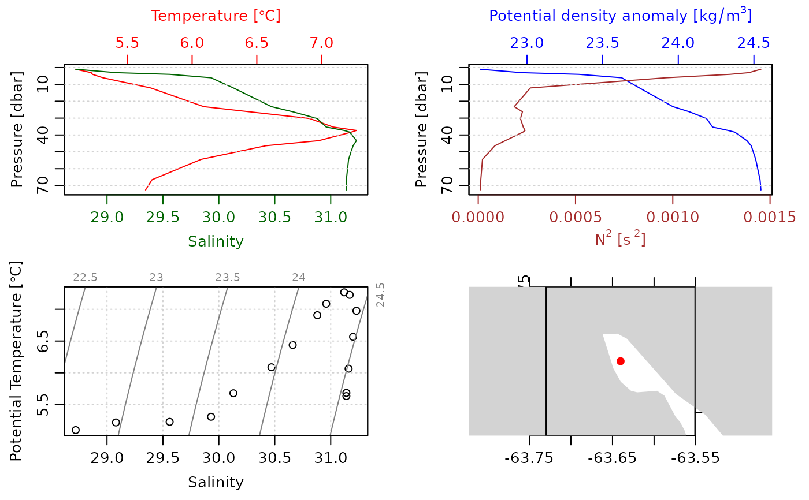
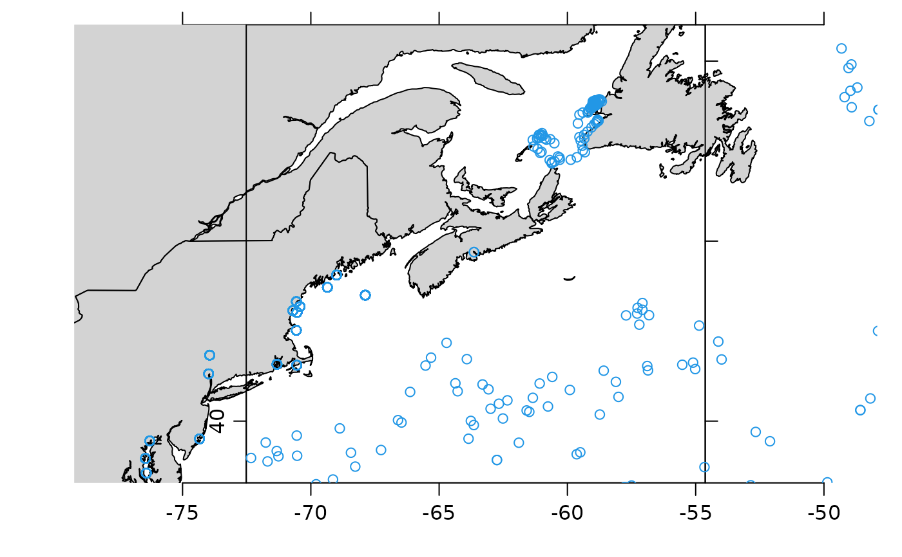

This function downloads CTD data from the GRSPP server at https://www.ncei.noaa.gov/data/oceans/gtspp/bestcopy/. This website is somewhat challenging to use; see ‘Details’.
Usage
dod.ctd.gtspp(
basin,
year,
month,
file = NULL,
destdir = ".",
debug = 0,
index = FALSE,
nc = NULL
)Arguments
- basin
character value indicating the ocean basin in which the data were acquired. This must be one of
"at","pa"or"in", for the Atlantic, Pacific and Indian basins, respectively. NB.basinis ignored ifncis #' provided, and is a full URL.- year
integer value giving the year in which the data were acquired. NB.
yearis ignored ifncis #' provided, and is a full URL.- month
integer value giving the month in which the data were acquired. If in character form, a two-digit value is required, with the first digit being
"0"for early months of the year. NB.monthis ignored ifncis #' provided, and is a full URL.- file
character value giving the name to be used for the downloaded file.
- destdir
a character value indicating the directory in which to store downloaded files.
- debug
an integer value indicating the level of debugging. If this exceeds 0, then some debugging messages will be printed.
- index
a boolean value indicating whether the index should be downloaded. This is FALSE by default. Note that
ncis ignored ifindexis TRUE. NB.indexis ignored ifncis #' provided, and is a full URL.- nc
character value either naming a netcdf file in a directory inferred from
basin,yearandmonth, or a URL that leads directly to such a file. The latter case is recognized byncstarting with"http". Note thatindexis ignored ifncis provided. See “Examples”.
Details
The .zip files provided on the NCEI server are not readible on a macOS
machine, which might also indicate problems on other machines. Therefore,
inventory files are read in .txt format, which increases download and read
time by over an order of magnitude.
See also
Other functions that download CTD data:
dod.ctd.bats(),
dod.ctd.bbmp()
Examples
# \donttest{
# Two examples are shown here. The first specifies the remote file by a full
# URL, and the second infers such a URL from a subset of an index file. Since
# downloading an index is slow, a common approach is to combine the approaches,
# re-downloading the index perhaps only once a week to gain access to the most
# recent data.
library(dod)
library(oce)
#> Loading required package: gsw
library(ocedata)
library(ncdf4)
# First, define a function to read, summarize and plot CTD
# data stored in a netcdf file.
process <- function(datafile)
{
nc <- nc_open(datafile)
S <- ncvar_get(nc, "salinity")
T <- ncvar_get(nc, "temperature")
z <- ncvar_get(nc, "z")
lon <- ncvar_get(nc, "longitude")
lat <- ncvar_get(nc, "latitude")
p <- swPressure(z, lat)
ctd <- as.ctd(S, T, p, longitude=lon, latitude=lat)
summary(ctd)
plot(ctd)
}
# Example A: get a data file from a known URL.
url <- paste0("https://www.ncei.noaa.gov/data/oceans/",
"gtspp/bestcopy/atlantic/2022/01/gtspp_47477452_te_111.nc")
dataFileA <- dod.ctd.gtspp(nc=url)
# above is equivalent to dod.ctd("at", 2022, 01, nc="gtspp_47477452_te_111.nc")
process(dataFileA)
#> CTD Summary
#> -----------
#>
#> * Location: 44.694N 63.64W
#> * Data Overview
#>
#> Min. Mean Max. Dim. NAs OriginalName
#> scan 1 8.5 16 16 0 -
#> salinity [PSS-78] 28.72 30.534 31.23 16 0 -
#> temperature [°C, ITS-90] 5.1 6.1575 7.27 16 0 -
#> pressure [dbar] 1.0082 31.256 72.6 16 0 -
#>
#> * Processing Log
#>
#> - 2022-12-23 20:37:18 UTC: `create 'ctd' object`
#> - 2022-12-23 20:37:18 UTC: `as.ctd(salinity = S, temperature = T, pressure = p, longitude = lon, latitude = lat)`

# Example B: get an index, find a file of interest, and then get it
# Get an index file for Atlantic Ocean observations in January 2022.
indexFile <- dod.ctd.gtspp(basin="at", year=2022, month=1, index=TRUE)
col.names <- strsplit(gsub("#", "", readLines(indexFile, n=1L)), ",")[[1]]
index <- read.csv(indexFile, skip=1L, col.names=col.names, header=FALSE)
# Plot sampling locations near Halifax, Nova Scotia
data(coastlineWorldFine, package="ocedata")
hlon <- -63.5728
hlat <- 44.6476
plot(coastlineWorldFine, clongitude=hlon, clatitude=hlat, span=2000)
points(index$longitude, index$latitude, col=4)

# Focus on the point nearest Halifax
dist <- geodDist(index$longitude, index$latitude, hlon, hlat)
focus <- index[which.min(dist), ]
dataFile <- dod.ctd.gtspp(nc=focus$data_URL)
process(dataFile)
#> CTD Summary
#> -----------
#>
#> * Location: 44.694N 63.64W
#> * Data Overview
#>
#> Min. Mean Max. Dim. NAs OriginalName
#> scan 1 8.5 16 16 0 -
#> salinity [PSS-78] 28.72 30.534 31.23 16 0 -
#> temperature [°C, ITS-90] 5.1 6.1575 7.27 16 0 -
#> pressure [dbar] 1.0082 31.256 72.6 16 0 -
#>
#> * Processing Log
#>
#> - 2022-12-23 20:37:23 UTC: `create 'ctd' object`
#> - 2022-12-23 20:37:23 UTC: `as.ctd(salinity = S, temperature = T, pressure = p, longitude = lon, latitude = lat)`
# }